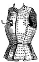
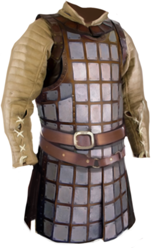
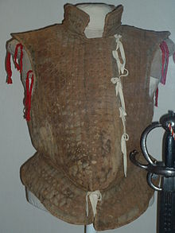

Brigandine
Brigandine, like chainmail and full plate armor, was made for protection. It was a lot cheaper than chainmail and full plate armor, so more people used it. The brigandine was favored by footsoldiers who had to use big weapons, and bandits, who had to stay light on their feet. Brigandine had immense mobility compared to full plate and chainmail, mainly because it was only leather and rivets of metals. Hard leather, canvas, and felt were the most used materials to make it. Brigandine was worn over a gambeson or sometimes chainmail as more of a decorative piece. It was similar to the civilian clothing known as a doublet, a shirt that fit very tight. Some of the earliest actual armies had used brigandine.
Brigandine Shirt
A brigandine chest plate with metal rivets lining it. It was very protective, but not nearly as strong as chainmail or plate. There was probably a gambeson, a heavy leather coat, or a chainmail shirt to stay with the leather.
Brigandine Coat
This is a brigandine shirt/coat with sleeves. The sleeves on the armor were not part of the brigandine, it was a part of a gambeson or other shirt that was worn under it. Brigandine with sleeves was not impossible, but it was fairly rare, considering many other pieces of armors like a gambeson would be a lot more protective.
Jack of Plates
This is a Jack of Plates. The Jack of Plates is very similar to regular brigandine, but it's mainly felt, canvas, or leather on top, the actual armor usually resides underneath the coat.